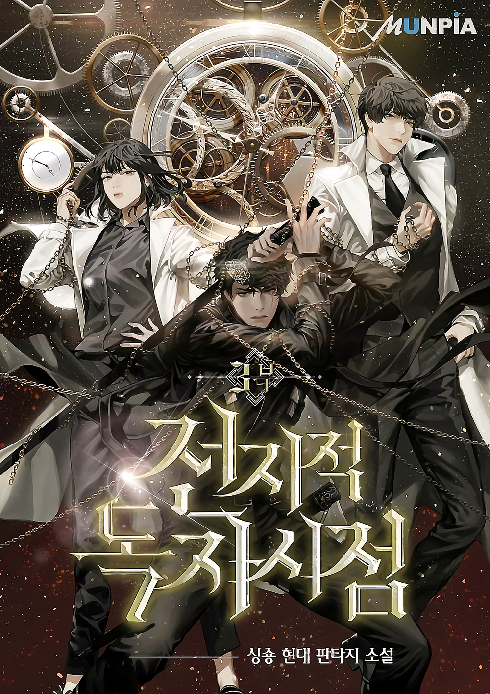
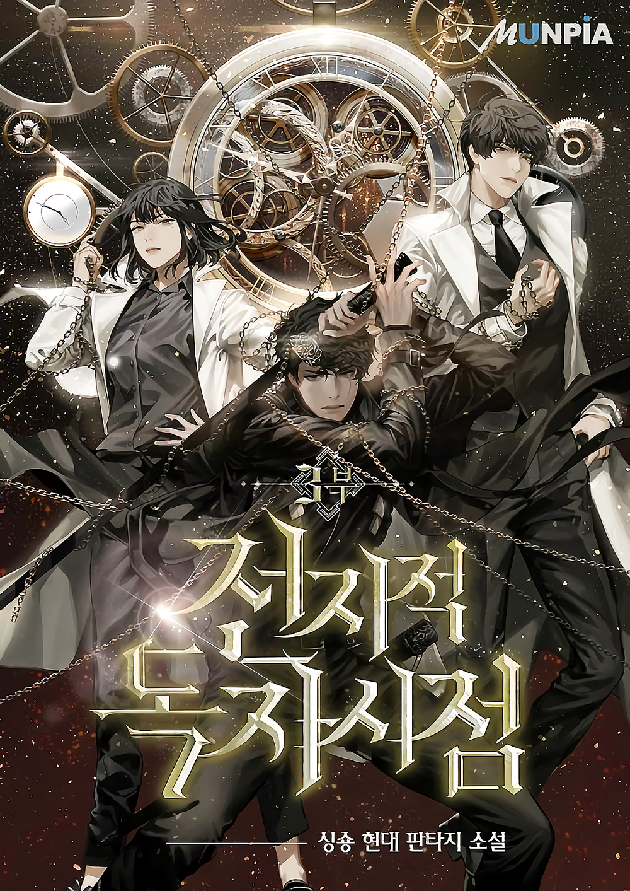

in mijn vrije tijd zit ik lekker te gamen novles lezen een beetje koken en anime kijken omdat het leuk is om te doen en ik kan er lekker mee relaxen mijn favoriete game is zelda tears of the kingdom.
ik game veel omdat ik het leuk vind en het veel mogelijkheden geeft met exploration en omdat het je steeds verbaast met wat er allemaal in zit.
ik vindt fantasie novles lezen ook heel leuk omdat de characters erin heel leuk zijn om over te lezen en ik heb het gevoel dat ik ook in het verhaal ben.
mijn favoriete novle is omniescient readers vieuwpoint en lord of the mystery. anime kijken is ook heel leuk omdat ik dan lekker in een fantasie werled kan leven
en het maakt me blij mijn favoriete anime is one piece.
Dingen die ik graag doe.
 
